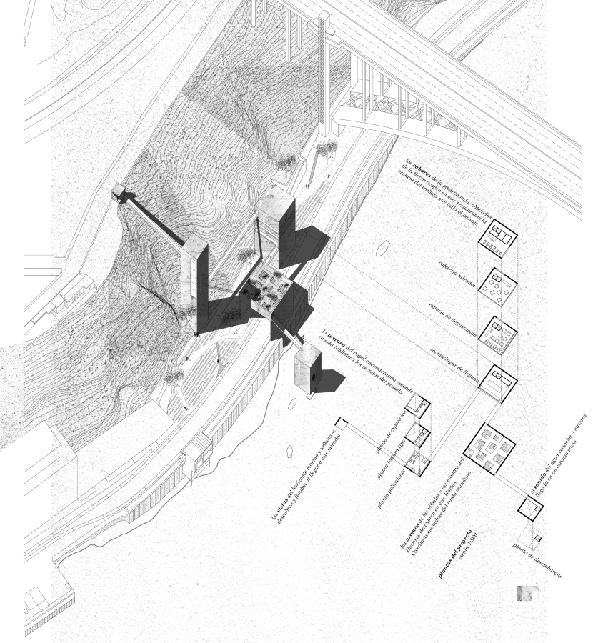
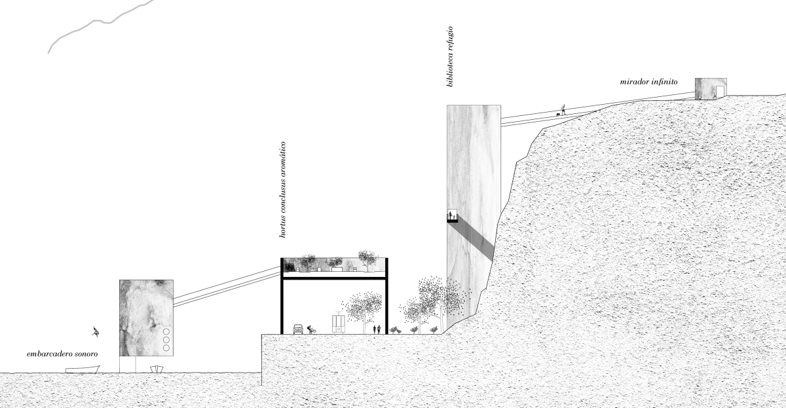
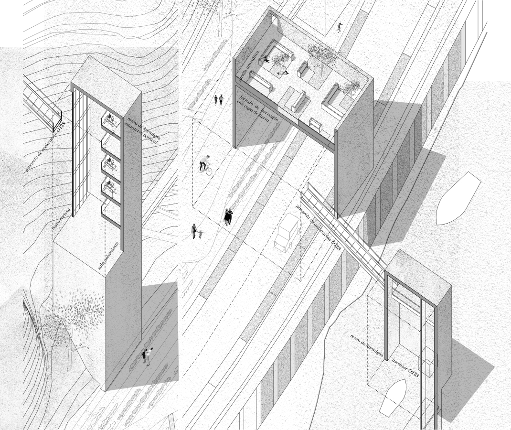
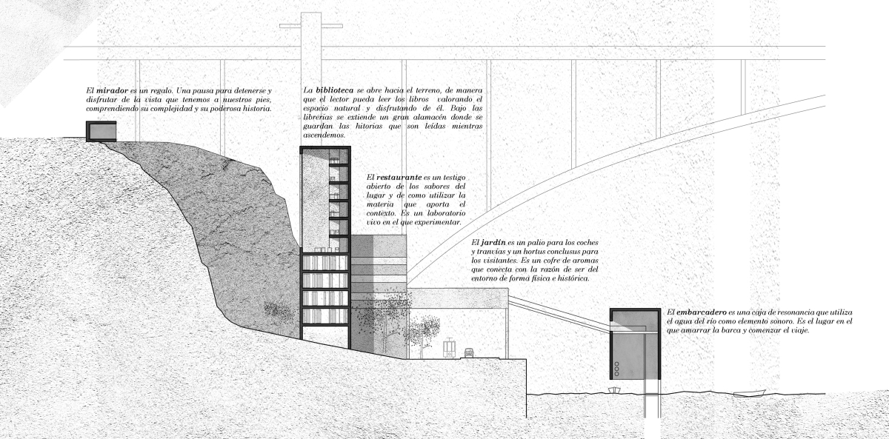
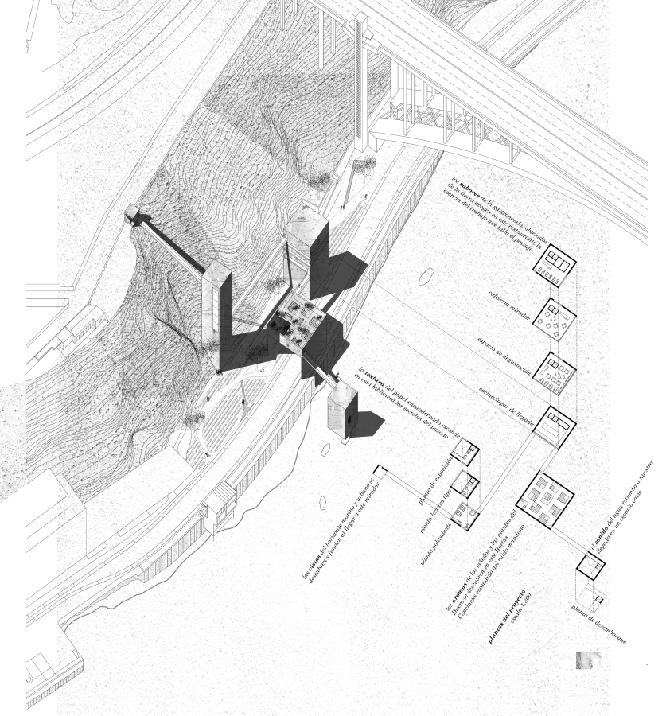
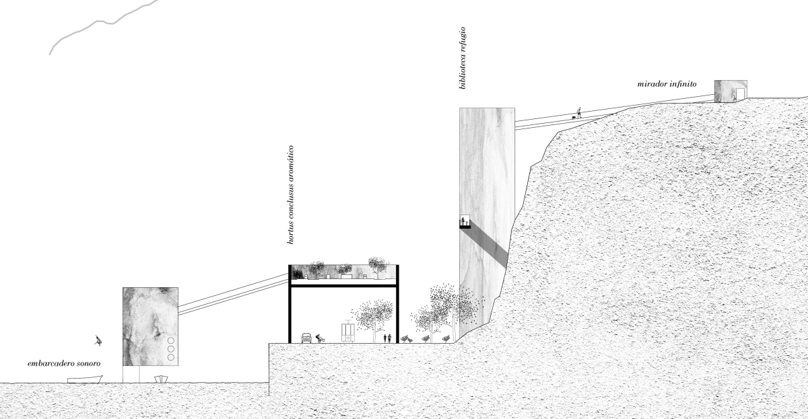
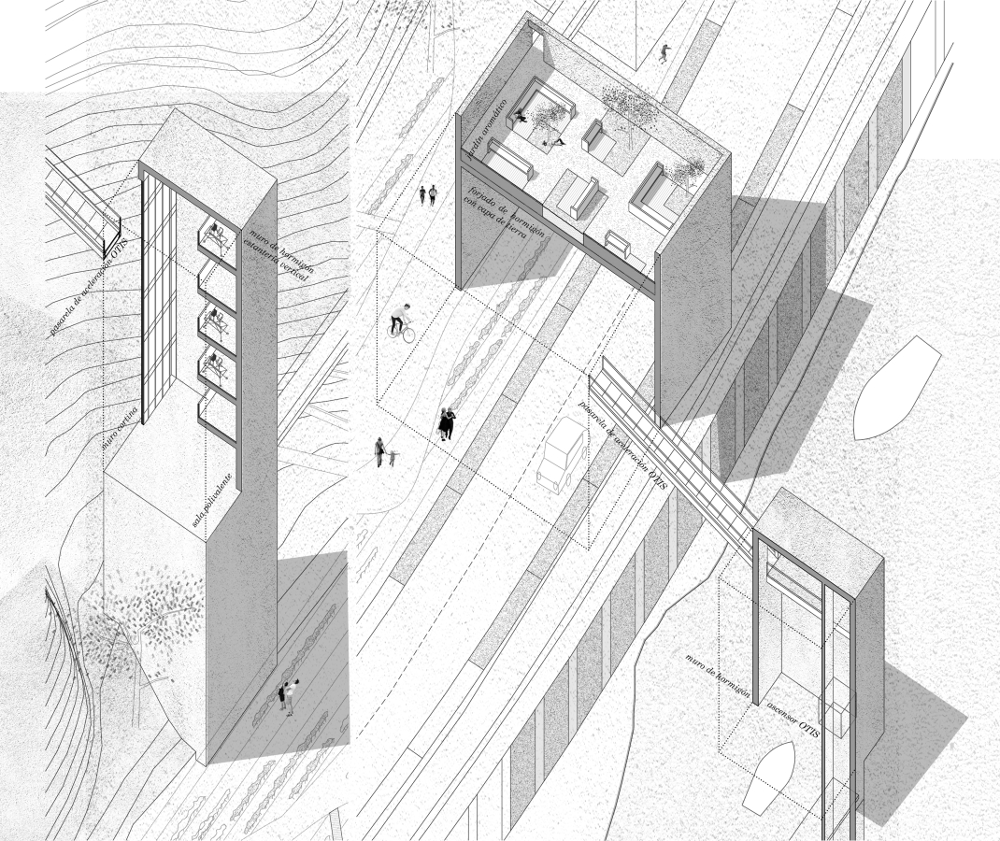
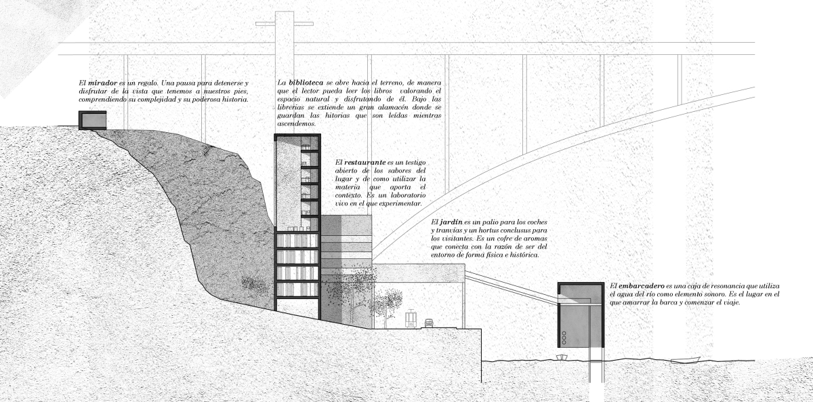

Conexión entre la ciudad alta de Porto y el río Duero
Concurso nacional de ideas
2019
“Vivo aquí, mas Porto nào é para mim im lugar; é um sentimiento”
Agustina Bessa-Luis
Vivir en un lugar como Oporto significa encontrarse en un laberinto que sube y baja, en el que uno pierde la noción de la ciudad como algo único, desdoblándose en múltiples entidades. Sus calles, sus plazas o sus jardines podrían estar en una ciudad cualquiera, pero al doblar una esquina aparece el Duero, se vislumbra alguno de sus puentes o nos llega el aroma del océano.
Quizá eso mismo sea lo que crea la ciudad, un sentimiento basado en todas las experiencias sensoriales que el viajero o el vecino guarda para sí. La vida de la ciudad, se concentra en la acción, en el deleite de los sentidos al recorrerla.
El lugar de intervención es complejo. Una ladera lleva de cicatrices ocasionadas por actuaciones descuidadas. La propuesta establece un diálogo entre el visitante y la ciudad a través de un viaje. Un viaje formado por sentidos y sensaciones que transforma la mente y el alma. De este modo el proceso de subir o bajar por la ladera encuentra su razón de ser, no sólo en la morfología característica de la ciudad, sino en aquello que la hace auténtica.